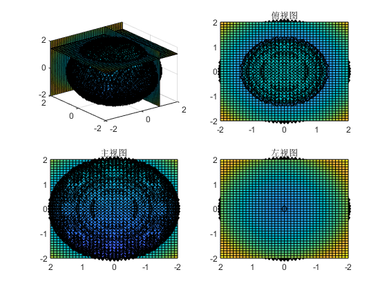

Contents
- 数据插值
- 使用interp1函数：interp1（x,y,x1,mode）
- 曲线拟合
- 最小二乘法，polyfit函数用于进行曲线拟合
- dsolve函数可以进行微分方程的求解
- 特解，给定一个条件
- 二项分布（服从0-1分布）：binopdf
- 绘制概率密度曲线
- 图像旋转
- 使用for循环完成动态图
- 图像三视图，隐函数句柄@的使用
- 三视图,view()调整视角
- 泰勒展开：taylor函数
- 动态过程
- 求函数的反函数：finverse(y,x)
- fimplicit3函数，对三维的隐函数绘图
- 对函数解析式进行修改subs
- 傅里叶变换，函数的逼近
- 调用下述自定义的傅里叶函数
- 动态演变过程,对分段函数f(x)=|x|/x的逼近
- 要调用的自定义函数，傅里叶函数的简单定义
数据插值
%在离散数据的基础上补插连续函数，使得这条连续曲线通过全部给定的离散数据点。 %插值是离散函数逼近的重要方法，利用它可通过函数在有限个点处的取值状况， %估算出函数在其他点处的近似值 x=[0 3 5 7 9 11 12 13 14 15]; y=[0 1.2 1.7 2.0 2.1 2.0 1.8 1.2 1.0 1.6]; plot(x,y,'.') %生成离散点
使用interp1函数：interp1（x,y,x1,mode）
x=[0 3 5 7 9 11 12 13 14 15]; y=[0 1.2 1.7 2.0 2.1 2.0 1.8 1.2 1.0 1.6]; x1=0:0.1:15; %x从0到15，按精度为0，1进行插值 % subplot(2,2,1); %将figure划分为2行2列 y1=interp1(x,y,x1,'linear');%相邻离散点用线段直接连起来（ plot(x1,y1); title ('linear'); % subplot(2,2,2); y2=interp1(x,y,x1,'nearest');%最近点插值，选择最靠近的样本点的值作为差值数据 plot(x1,y2); title ('nearest'); % subplot(2,2,3); y3=interp1(x,y,x1,'pchip');%分段3次埃尔米特插值，离散数据点在插值函数上， %还要满足若干离散数据点处的一阶导数存在且连续，使得曲线平滑且具有保形性 plot(x1,y3); title ('pchip'); % subplot(2,2,4); y4=interp1(x,y,x1,'spline');%三次样条插值，采用分段三次多项式，除满足离散数据点在插值函数上， %还要满足若干离散数据点处的一阶导数和二阶导数存在且连续 plot(x1,y4); title ('spline');
曲线拟合
选择适当的曲线类型来拟合观测数据，并用拟合的曲线方程分析两变量间的关系。
最小二乘法，polyfit函数用于进行曲线拟合
clf x=1790:10:2010; y=[3 5 7 9 12 13 15 16 18 21 23 37 24 29 30 28 33 34 36 38 39 44 42]; plot(x,y,'r.') f=polyfit(x,y,3); %polyfit(x,y,n),n=3就是用三次多项式进行拟合 x1=1790:0.2:2010; %重新定义自变量x1 y1=polyval(f,x1); %重新定义因变量y1， plot(x,y,'r*',x1,y1,'b') %通过对离散数据的拟合，可以对后面的数据进行预测 ans=polyval(f,2020); %多项式函数拟合或插值，并非越高越好 %多项式函数次数越高容易产生振荡而偏离原函数，使得误差增大
警告: 多项式未正确设置条件。请添加具有不同 X 值的点，减少多项式的阶数，或者尝试按照 HELP POLYFIT 中所述进行居中和缩放。
dsolve函数可以进行微分方程的求解
%dsolve（f,g,x）.f,g指微分方程表达式，x是自变量 %在符号计算中，用D代表求导，Dy是y的一阶导数dy/dx（不是y的一阶微分），D2y是二阶导..... %Dy2(3)=-1就是x=3,y''=-1 %求解微分方程：dy/dx=3*x^2*y syms x y f='Dy=3*x^2*y'%f来定义上面的微分方程用''包含 dsolve(f,x); %得出的是通解
f =
'Dy=3*x^2*y'
特解，给定一个条件
syms x y f='x*y+(x^2+1)*Dy=0';%xy+(x^2+1)dy/dx=0 g='y(0)=1' %给定条件，y(0)=1 Slu=dsolve(f,g,x) pretty(Slu)
g =
'y(0)=1'
Slu =
1/(x^2 + 1)^(1/2)
1
------------
2
sqrt(x + 1)
二项分布（服从0-1分布）：binopdf
%binopdf(k,n,p) %三个参数，一共进行n次，事件发生了k次，每次概率为p px=binopdf(45,100,0.5) %进行100次实验，事件发生45次，每次概率为0.5 %p(x=k)=C(n,k)*p^k*(1-p)^(n-k)
px =
0.048474
绘制概率密度曲线
clf x=1:1:100; p=binopdf(x,100,0.5); plot(x,p); title('二项分布') %当二项分布的n很大而p很小时，泊松分布可作为二项分布的近似,函数：poisspdf
图像旋转
t=linspace(0,10*pi,200); x=sin(t)+t.*cos(t); y=cos(t)-t.*sin(t); z=t; subplot(1,2,1) plot3(x,y,z); xlabel('x轴'); grid on; subplot(1,2,2) f=plot3(x,y,z);%将图画赋值给f %f是需要进行旋转的函数，v是一个一行三列的矩阵[x,y,z]， %矩阵中每个元素只有0 1两个取值，代表绕哪个轴旋转，x是旋转的角度 rotate(f,[1 0 0],90)%对x轴选择90度 xlabel('x轴'); grid on;
使用for循环完成动态图
clf t=linspace(0,10*pi,200); x=sin(t)+t.*cos(t); y=cos(t)-t.*sin(t); z=t; f=plot3(x,y,z);%用f存储一下函数 xlabel('x=sint+tcost'); ylabel('y=cost-tsint'); zlabel('z=t'); title('三维螺旋线'); axis([-50,50,-50,50,0,40]) grid on; for i=0:360 rotate(f,[0 0 1],1) pause(0.003) end
图像三视图，隐函数句柄@的使用
%slice函数用于对图像进行切面 %slice(x,y,z,v，a,b,c) %x,y,z,作为坐标定义三维图像v %a,b,c作为矩阵，记录切面位置 f=@(x,y,z) x^2+y^2+z^2-4; %球的隐函数，（x,y,z）是调用句柄，x^2+y^2+z^2-4为想表达的式子 [x,y,z]=meshgrid(-2:0.1:2);%XYZ的取值范围-2到2，精度0.1 v=x.^2+y.^2+z.^2-4; %球 clf fimplicit3(f,[-2 2 -2 2 -2 2],'d');%这个函数用于绘制三维隐函数图像 title('切割图') hold on slice(x,y,z,v,1,2,1.5)% 在x=1,y=2,z=1.5处切v
警告: 函数处理数组输入时行为异常。要改善性能，请将您的函数正确向量化，以返回大小和形状 与输入参数相同的输出。
三视图,view()调整视角
%创建函数和切面 clf f=@(x,y,z) x^2+y^2+z^2-4; [x,y,z]=meshgrid(-2:0.1:2); v=x.^2+y.^2+z.^2-4; %原图 subplot(2,2,1) fimplicit3(f,[-2 2 -2 2 -2 2],'d') hold on slice(x,y,z,v,1,2,1.5) %俯视图 subplot(2,2,2) fimplicit3(f,[-2 2 -2 2 -2 2],'d') hold on slice(x,y,z,v,1,2,1.5) view(0,90) title('俯视图') %主视图 subplot(2,2,3) fimplicit3(f,[-2 2 -2 2 -2 2],'d') hold on slice(x,y,z,v,1,2,1.5) view(270,0) title('主视图') %左视图 subplot(2,2,4) fimplicit3(f,[-2 2 -2 2 -2 2],'d') hold on slice(x,y,z,v,1,2,1.5) view(180,0) title('左视图')
警告: 函数处理数组输入时行为异常。要改善性能，请将您的函数正确向量化，以返回大小和形状 与输入参数相同的输出。 警告: 函数处理数组输入时行为异常。要改善性能，请将您的函数正确向量化，以返回大小和形状 与输入参数相同的输出。 警告: 函数处理数组输入时行为异常。要改善性能，请将您的函数正确向量化，以返回大小和形状 与输入参数相同的输出。 警告: 函数处理数组输入时行为异常。要改善性能，请将您的函数正确向量化，以返回大小和形状 与输入参数相同的输出。
泰勒展开：taylor函数
%f=taylor(y,x,x0,'Order',n) %自变量x，函数y，在x=x0点展开，'Order'必须加上（包括单引号） %n是指高阶无穷小，也就是展开到n-1阶 syms x y%解析式要用符号变量定义 y=sin(x) f=taylor(y,x,0,'Order',6) pretty(f)
y = sin(x) f = x^5/120 - x^3/6 + x 5 3 x x --- - -- + x 120 6
动态过程
clf for i=1:2:36 x=linspace(-5*pi,5*pi,30000); y=sin(x); plot(x,y,'r-') hold on %以下是展开过程 syms x y y=sin(x); f=taylor(y,x,0,'Order',i); %从一阶开始展开到三十六阶展开 h=ezplot(f,[-5*pi,5*pi]); %这里因为是用的符号变量，要用ezplot来画图 axis([-5*pi,5*pi,-1.2,1.2]); set(h,'Color','m') pause(0.5) hold off end
求函数的反函数：finverse(y,x)
%其中x，y分别为自变量，因变量--->y=lnx的反函数为e^x syms x y f y=log(x); %以e为底数的对数，数学中的lnx f=finverse(y,x);
fimplicit3函数，对三维的隐函数绘图
%调用格式fimplicit3（f,[xmin,xmax,ymin,ymax,zmin,zmax]） %注意这里的f需要用函数句柄调用：@（x,y,z） clf g=@(x,y,z) x^2+y^2+z^2-1; %定义球的隐函数 fimplicit3(g,[-1 1 -1 1 -1 1],'b')%画g函数，xyz范围已定，颜色为蓝色
警告: 函数处理数组输入时行为异常。要改善性能，请将您的函数正确向量化，以返回大小和形状 与输入参数相同的输出。
对函数解析式进行修改subs
subs函数用于对解析式进行修改：
%调用格式：subs(f,f1,f2) 将表达式f中的f1片段替换成f2 syms x f f=sin(x)+x g=subs(f,sin(x),log(x)) %将f=sin(x)=x中的sin(x)替换成log(x).结果为：g=log（x）+x
f = x + sin(x) g = x + log(x)
傅里叶变换，函数的逼近
%任何周期函数都可以用正弦函数和余弦函数构成的无穷级数来表示 %选择正弦函数与余弦函数作为基函数 %web('https://zhuanlan.zhihu.com/p/41455378','-browser')%打开关于傅里叶级数的推导知乎网页
调用下述自定义的傅里叶函数
syms x f f=x*(x-pi)*(x-2*pi); F=fuliye(f,x,6,0,2*pi); %因为调用的关系，将局部定义的函数放在被调用之后 %因为脚本中的函数定义必须出现在文件的结尾。所以自定义的函数在最后
动态演变过程,对分段函数f(x)=|x|/x的逼近
clf syms x y=abs(x)/x; xx=-pi:pi/100:pi; xx=xx(xx~=0); %抠点（去除0），分母不能有0 yy=subs(y,x,xx); %替换。这里不大好懂，为了使用plot函数， %我们要用密集的点坐标而不是符号量x来绘图 L=pi; a0=int(y,x,-L,L);%积分 f=a0/2; F=subs(f,x,xx); %替换 plot(xx,yy,xx,F); axis([-pi,pi,-1.5,1.5]) pause(0.1) %间隔0.1秒 hold off for i=1:20 ai=int( y*cos(i*pi*x/L),x,-L,L )/L; bi=int( y*sin(i*pi*x/L),x,-L,L )/L; f=f+ai*cos(i*pi*x/L)+bi*sin(i*pi*x/L); %累加，这里没有使用自定义函数， %是为了提高计算效率，原理有点类似算法竞赛中的递推，省去了一些没有必要的重复计算 F=subs(f,x,xx); plot(xx,yy,xx,F) axis([-pi,pi,-1.5,1.5]) pause(0.001) %因为运算本身需要耗时间， %所以停顿时间就设置的极短。但是为了展示动态效果，不得不加上pause函数 hold off end
要调用的自定义函数，傅里叶函数的简单定义
给定周期函数为f(x),x属于[-L,L]
%则，f(x)=f(x+kT),k为自然数，T为周期 %如果区间不对称，下x属于[a，b] %则将函数向左平移（a+b）/2个单位，此时L=(b-a)/2 %傅里叶级数为f(x)=a0/2+{ai*cos(i*pi*x/L)+bi*sin(i*pi*x/L)}， %这里{}表示i=1到正无穷的累加 function F= fuliye(f,x,n,a,b) %表达式f,自变量x，n阶展开，区间（a,b） L=(b-a)/2; if abs(a+b)>0 %不对称 f=subs(f,x,x+L+a); %向左平移，用到subs函数对解析式进行修改 end a0=int(f,x,-L,L);F=a0/2; for i=1:n %累加和我们用for循环实现 ai=int( f*cos(i*pi*x/L),x,-L,L )/L ; %int函数表示积分 bi=int( f*sin(i*pi*x/L),x,-L,L )/L; F=F+ai*cos(i*pi*x/L)+bi*sin(i*pi*x/L); end if abs(a+b)>0 F=subs(F,x,x-L-a); %再平移回来 end end